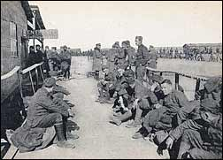

Delousing
British (left) and German (right) soldiers delousing their clothes
Body lice were a persistent pest on both sides of the battlefield. In the narrow trenches there was no escape from them: the lice hopped from body to body. Every soldier became afflicted with lice, as the Americans soon found out when they entered the battlefields in 1918.
The picture on the right shows an American delousing station in St. Nazaire, France, where clothes were immersed in Naphthalene - a temporary solution
Lice were not just uncomfortable (scratching made the itching worse), they also spread Trench Fever, a non-fatal but debilitating disease that brought many soldiers down. According to some sources Trench Fever was responsible for 15 percent of the trench casualties.
 See also 250 color pictures from the Great War: many of these original autochromes and others artificially tinted.
See also 250 color pictures from the Great War: many of these original autochromes and others artificially tinted.
 To the index pages of the War Pictures of the Week
To the index pages of the War Pictures of the Week
 To the frontpage of The Heritage of the Great War
To the frontpage of The Heritage of the Great War